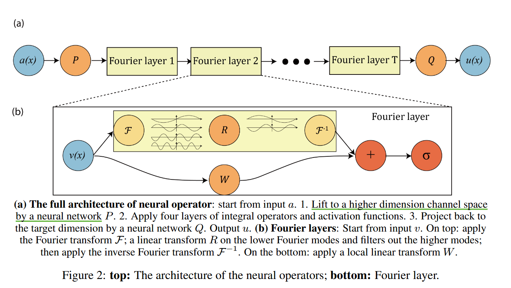

记录一些算子神经网络求解PDE的笔记.
最简单的神经网络函数 只能拟合线性函数.
有限差分法(2维 possion 方程)：数值差分代替微分
有限元法：构造基函数
软件
Firedrake
Dolfin_adjoint
传统数值算法需要构造剖分，若求解维数太高会导致维度灾难.
维度灾难： d 维空间若每个维度打 n 个网格点，那么需要 个网格点.
PINN：
Zongyi Li (2020)
[1] Fourier Neural Operator with Learned Deformations for PDEs on General Geometries
dataset_path = '/kaggle/input/fnodatasets/burgers_data_R10.mat'
按照上述博客，首先 pip install neuraloperator
b站code：50:40
算子学习可以被视为一个图像到图像的问题。傅里叶层可以被看作是卷积层的替代品.
N-S 方程
将时间从 18 h 缩减到 2 分半.
经典的神经网络关注有限维空间之间的映射. 神经算子的优点：泛化性

class FNO1d(nn.Module):
def __init__(self, modes, width):
"""
1D Fourier Neural Operator model.
Args:
modes (int): Number of spectral modes.
width (int): Number of input channel.
"""
super(FNO1d, self).__init__()
self.modes1 = modes
self.width = width
self.fc0 = nn.Linear(2, self.width) # input channel is 2: (a(x), x) MeshgridTensor + initial condition
self.conv0 = SpectralConv1d(self.width, self.width, self.modes1)
self.conv1 = SpectralConv1d(self.width, self.width, self.modes1)
self.conv2 = SpectralConv1d(self.width, self.width, self.modes1)
self.conv3 = SpectralConv1d(self.width, self.width, self.modes1)
self.w0 = nn.Conv1d(self.width, self.width, 1)
self.w1 = nn.Conv1d(self.width, self.width, 1)
self.w2 = nn.Conv1d(self.width, self.width, 1)
self.w3 = nn.Conv1d(self.width, self.width, 1)
self.fc1 = nn.Linear(self.width, 128)
self.fc2 = nn.Linear(128, 1)
def forward(self, x):
# stage 1: lift the channel from 2 to self.width = 64
x = self.fc0(x) # [Batch, Nx, C] -> [Batch, Nx, Width], eg. [20, 128, 2] -> [20, 128, 64]
x = x.permute(0, 2, 1) # [Batch, C, Nx], eg. [20, 64, 128]
# stage 2: integral operators u' = (W + K)(u).
# W is the linear transformation; K is the spectral convolution kernel.
x1 = self.conv0(x) # [Batch, C, Nx], eg. [20, 64, 128]
x2 = self.w0(x) # [Batch, C, Nx], eg. [20, 64, 128]
x = x1 + x2
x = F.relu(x) # [Batch, C, Nx], eg. [20, 64, 128]
x1 = self.conv1(x)
x2 = self.w1(x)
x = x1 + x2
x = F.relu(x) # [Batch, C, Nx], eg. [20, 64, 128]
x1 = self.conv2(x)
x2 = self.w2(x)
x = x1 + x2
x = F.relu(x) # [Batch, C, Nx], eg. [20, 64, 128]
x1 = self.conv3(x)
x2 = self.w3(x)
x = x1 + x2 # [Batch, C, Nx], eg. [20, 64, 128]
# stage 3: put the channel back to 1
x = x.permute(0, 2, 1) # [Batch, Nx, C], eg. [20, 128, 64]
x = self.fc1(x) # [Batch, Nx, C] -> [Batch, Nx, 128], eg. [20, 128, 64] -> [20, 128, 128]
x = F.relu(x)
x = self.fc2(x) # [Batch, Nx, C] -> [Batch, Nx, 1], eg. [20, 128, 128] -> [20, 128, 1]
# since there are only one output
x = x.squeeze(-1) # [Batch, Nx, 1] -> [Batch, Nx], eg. [20, 128, 1] -> [20, 128]
return x
# out = model(x) # 隐式触发了 forward(x), 这是因为 Module 类内部定义了 __call__ 方法
[5] T. Chen and H. Chen. Universal approximation to nonlinear operators by neural networks with arbitrary activation functions and its application to dynamical systems. IEEE Transactions on Neural Networks, 6(4):911–917, 1995.
Deep Operator Net 的目标是为了逼近算子
是一个非线性连续算子，其中
分为 trunk, branch 两部分
记
深度学习架构满足affine invariance,
学习算法使机器人从 2D 视频来建模自己的 3D 形态结构、运动学、运动控制用于任务规划.
实际机器人臂上绿色的覆盖部分表示我们模型的预测
神经辐射场(Neural Radiance Fields)
包含三层深度神经网络：
coordinates encoder, kinematic encoder,
核心问题：
要做什么任务，模型构建 (不能复现就算了)
选择哪个神经网络，输入参数是什么，效果怎么样
数据集怎么样？
encoder, decoder 架构, basisonet 架构, 学习基